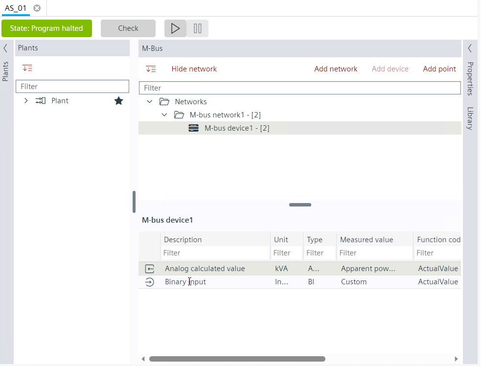
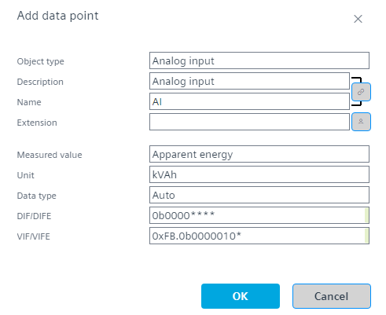

在M-bus中添加数据点（预设配置）
使用现有预设配置在 M-bus 网络中添加不同的数据点。
M-bus modes

- Technical data sheet or specification of the device to be integrated is available from the supplier.
- Go to Building > Building structure.
- Open the M-bus task.
- In the M-bus area, select the device for which you want to add the data point.
- Click Add data point.
- The Add data point dialog box opens.

- Do the following:
- a. Select the type of object in the Object type field. Default is Analog input.
- b. Edit the description of the data point in the Description field.
- c. Edit the name of the data point in the Name field.
- d. Enter an extension to the M-bus name in the Extension field.
- The extension is added in parenthesis in the Name field.
- e. Select a value from the Measured value drop-down list.
- f. Select a unit from the Unit drop-down list.
- The Unit and VIF/VIFE field values change accordingly.
M-bus value information block (VIB) - g. Select the BACnet object data type from the Data type drop-down list:
- Auto
- Binary coded decimal
- Float
- Signed
- Unsigned - Click OK.
- A M-bus data point is added.